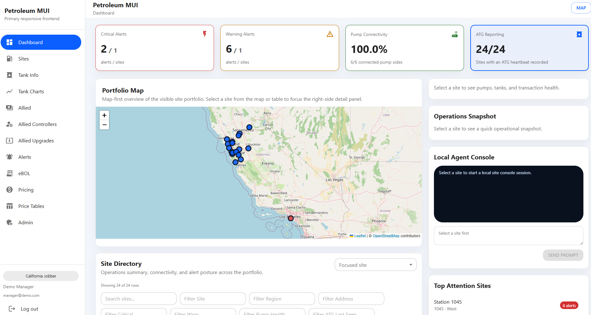
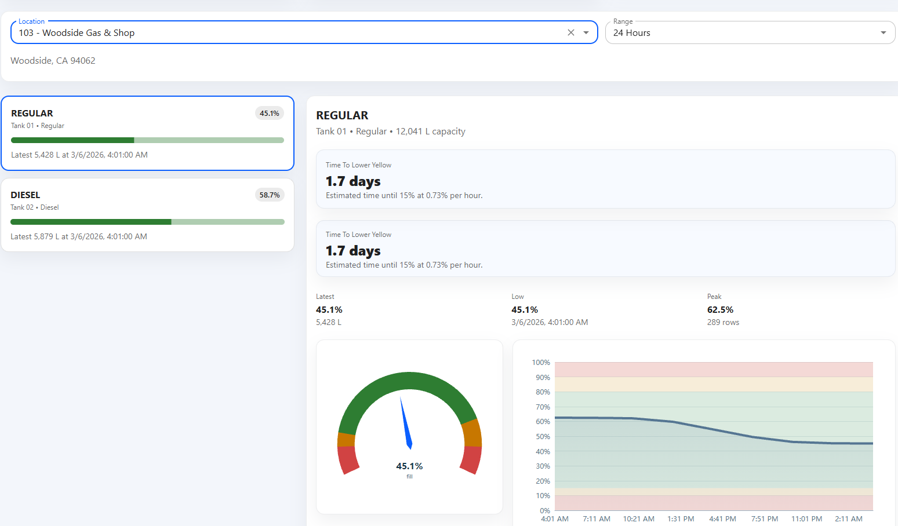
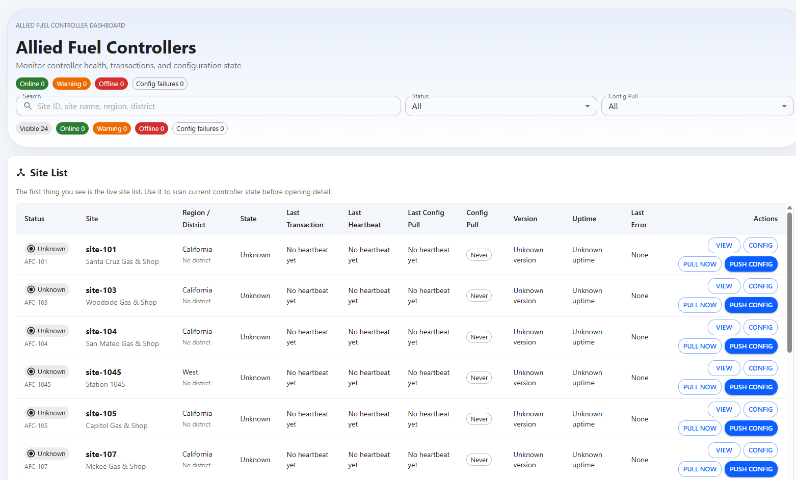
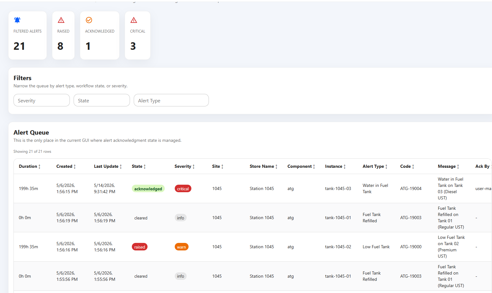

Payment & EMV Systems
EMV certification support, processor integrations, secure transaction routing, and Android terminal workflows for retail payment environments.
Explore payment systemsWannLynx Technologies designs integration, certification, monitoring, and operational software for regulated retail environments where reliability, security, and real-time visibility matter.

WannLynx works where the store, the forecourt, the processor, and the cloud platform all need to agree. The focus is practical: fewer blind spots, cleaner integrations, and systems that can be supported after go-live.
EMV certification support, processor integrations, secure transaction routing, and Android terminal workflows for retail payment environments.
Explore payment systemsPump-side monitoring, ATG visibility, controller connectivity, and operational software for fuel sites that need dependable status and alerts.
Explore petroleum operationsDashboards, analytics, searchable transaction data, and cloud-connected reporting for teams that need a better operational picture.
Explore data platformsDevice communication, secure field workflows, networking, and controller-level integration for systems that live outside the browser.
Explore device integrationAdmin dashboards, role-based access, multi-site views, and responsive interfaces for operations teams and support staff.
Explore web portalsAlerts, logs, exception visibility, and production monitoring built into the tools that support your field systems and transaction flows.
Explore monitoring toolsWannLynx is a fit when multiple vendors, device classes, and support groups need a single technical partner who can bridge field systems and cloud software.
Sites need uptime, visibility, and practical tools for managers, operators, and service technicians. WannLynx helps turn scattered device data into something actionable.
Integration programs need clean certification support, controllable transaction flows, and debugging that exposes the real failure point instead of hiding it.
Controllers, pumps, and ATG systems often live behind legacy interfaces. WannLynx builds the software that makes those systems usable in modern operations.
When a team is managing devices, cloud tools, analytics, and support workflows at once, a focused technical partner can shorten the path to a stable production system.
These are the kinds of programs that benefit from domain knowledge, disciplined debugging, and a production-first mindset.
Support for EMV certification, processor testing, terminal behavior, and the logs required to understand what happened during a transaction issue.
A dashboard that shows controllers, sites, alerts, transaction state, and configuration status across a distributed network.
Secure communication between field devices and cloud software so support teams can see what is happening without relying on guesswork.
WannLynx builds portals that give operations teams a single place to review multi-site status, controller health, tank visibility, alerts, and configuration history.

These previews show the style of dashboard, detail, alerting, and monitoring views that support petroleum and payment operations. Click any image to open the full-size screenshot.




Start with a clear description of the devices, the site layout, the transaction path, and the behavior you need to stabilize. WannLynx can help translate that into a practical implementation plan.